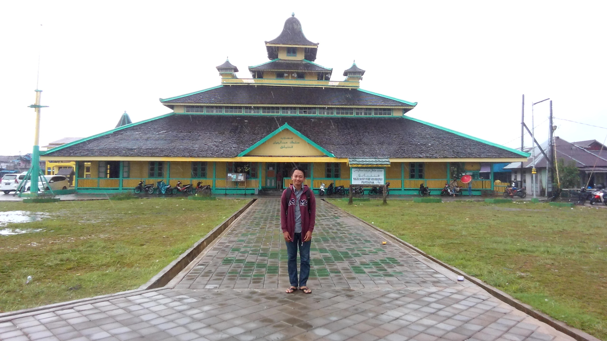
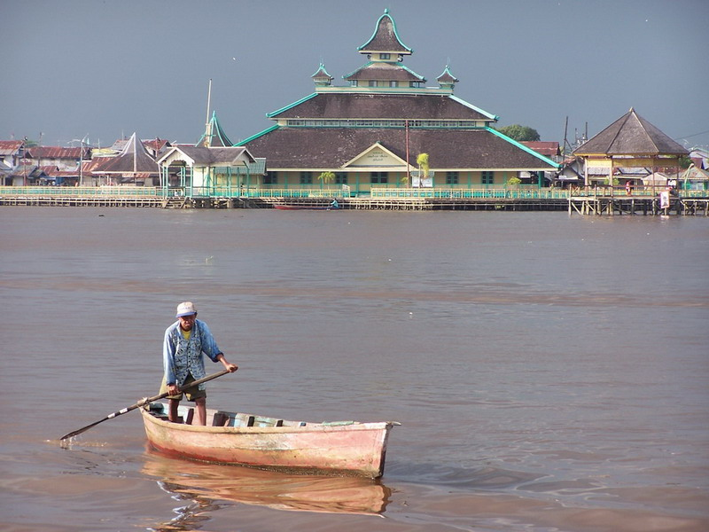
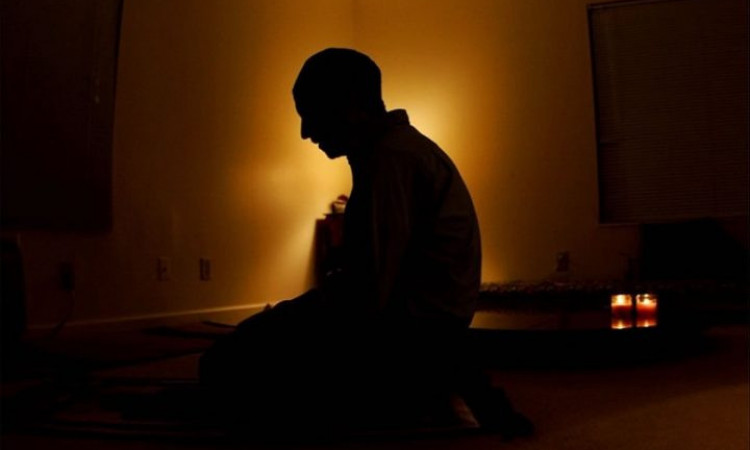
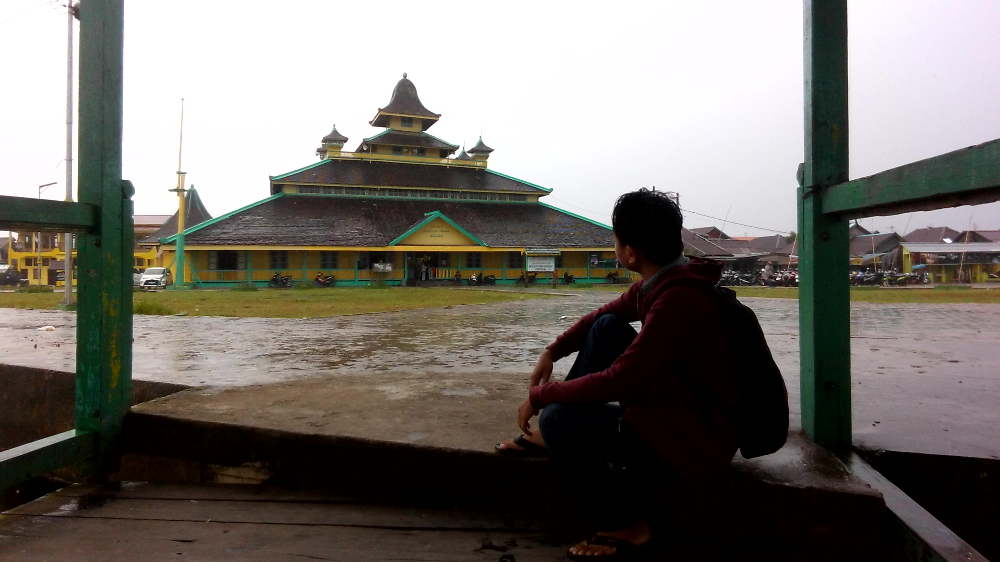
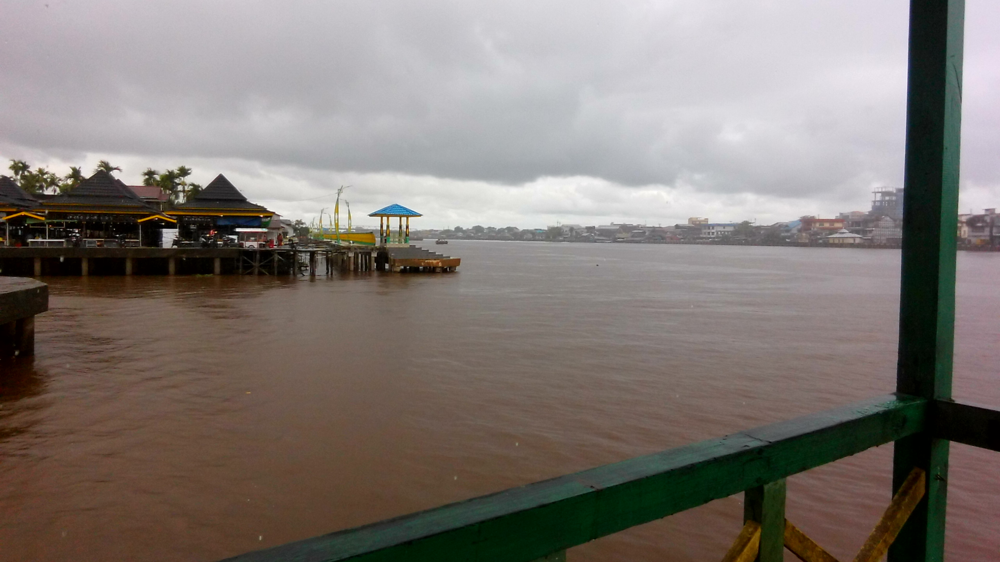
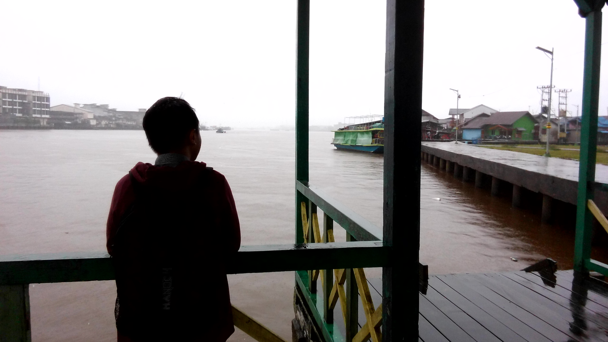

Sejarah
Pendiri masjid sekaligus pendiri Kota Pontianak adalah Syarif Abdurrahman Alkadrie. Ia seorang keturunan Arab, anak Al Habib Husein, seorang penyebar agama Islam dari Jawa. Al Habib Husein datang ke Kerajaan Matan pada 1733 Masehi. Al Habib Husein menikah dengan putri Raja Matan (kini Kabupaten Ketapang) Sultan Kamaludin, bernama Nyai Tua. Dari pernikahan itu lahirlah Syarif Abdurrahman Alkadrie, yang meneruskan jejak ayahnya menyiarkan agama Islam.. baca selengkapnya

Wisata

Hiburan
Masjid ini dekat dengan sungai kapuas tak heran jika pada malam hari banyak sekali orang yang mengunjungi untuk..
baca selengkapnya

Religi
Pada bulan ramadhan masjid ini selalu ramai dikunjungi orang dari berbagai daerah untuk..
baca selengkapnyaKuliner
Sekitar masjid terdapat banyak sekali jajanan kaki lima tentunya jajanan khas kota Pontianak. Kabarnya kuliner tersebut hanya bisa dijumpai di..
baca selengkapnyaGaleri



Video
Testimoni
Andrew
Suasananya sangat pas sambil menunggu matahari terbenam dengan ditemani segelas kopi asiang
Daniel
Ini pertama kalinya aku datang ke sini, masjid ini sungguh luar biasa